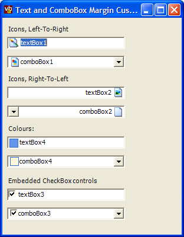

Text Box Margin Customise (91K)
Text Box Margin Customise (91K)
 23 Oct 2003
23 Oct 2003
First Posted

Adding an Icon or Control to a TextBox or ComboBox
The standard .NET Framework ComboBox does not support an icon in the text box section of the control. This article presents a class which can be used to show an icon, a control or a custom-drawn image into any TextBox or ComboBox (VB.NET and C# code provided).
Making Space in a TextBox
One feature of the Windows text box control which isn't exposed in any way in the .NET Framework is the ability to set a left or right margin to the control using the EM_SETMARGINS message. By taking advantage of this you can move the text over and therefore make space for an object on the left or right hand side of the control. The same technique can also be applied to a combo box control with the DropDown style, since internally that includes a standard TextBox. All that needs to be done to set the margins is to find the handle to the control.
This article presents a TextBoxMarginCustomise class which provides both the ability to set the margins on any control along with a series of methods which make drawing into the new margin area or placing a control over it straightforward.
Using the Class
The simplest thing you can do with the class is to set the margin of a text box. Various static methods are exposed to set the margin on either a class (or class derived from) the Framework TextBox and ComboBox classes:
// Set the near margin of comboBox1: TextBoxMarginCustomise.NearMargin(comboBox1, 16); // Set the far margin of textBox1 TextBoxMarginCustomise.FarMargin(textBox, 4);
Note that if you change the font of the control you will need to reset the margin.
If you want to use the class to place something into the margin then you'll need to create an instance of the class and use one of the three modes.
- Drawing an Icon from an ImageList
Using this method will cause the margin to be automatically set from the size of the images in the ImageList, and setting the Icon property to the zero-based index of the image in the ImageList control will display the icon. To blank the area, set the Icon property to -1.
using vbAccelerator.Components.Controls; ... private TextBoxMarginCustomise textBox1Icon; ... // Assign a text box customiser to show an // icon in the near margin of textBox1: textBox1Icon = new TextBoxMarginCustomise(); textBox1Icon.ImageList = ilsIcons; textBox1Icon.Icon = 1; textBox1Icon.Attach(textBox1);
- Showing a Control
This is performed in the same way as setting an icon, except that you use the Control property to assign the control:
private TextBoxMarginCustomise comboBox3Icon; // Set to display a CheckBox control in the near // margin of a combo box: comboBox3Icon = new TextBoxMarginCustomise(); comboBox3Icon.Control = checkBox2; comboBox3Icon.Attach(comboBox3);
- Drawing a Customised Image
To customise painting you need to create a class which implements the ITextBoxMarginCustomisePainter interface. Then you can connect the class using the CustomPainter property.
Implementing the ITextBoxMarginCustomisePainter interface is a matter of providing a concrete implementation of the GetMarginWidth and Draw methods:
public class MyMarginPainter : ITextBoxMarginCustomisePainter { ////// Called to obtain the width of the margin. /// ///Width of the margin public int GetMarginWidth() { return 18; } ////// Called whenever the margin area needs to /// be repainted. /// /// Graphics object to paint on. /// Boundary of margin area. /// Whether the control is right to left /// or not public void Draw(Graphics gfx, Rectangle rcDraw, bool rightToLeft) { // example fills the rectangle with the highlight colour gfx.FillRect(SystemBrushes.Highlight, rcDraw); } }Once done you attach a new instance of the class:
private TextBoxMarginCustomise customPaint; customPaint = new TextBoxMarginCustomise(); customPaint.CustomPainter = new MyMarginPainter(); customPaint.Attach(textBox4);
Implementation Details
There are two parts to the implementation of TextBoxMarginCustomise. The first is the functionality which allows the margins to be set, and the second is functionality to draw onto the TextBox.
1. Setting Margins
The margin setting message in the Windows API allows the left or right margin of the text box to be set. However, to be consistent with the rest of the .NET Framework the class exposes these as Near and Far margin properties, which means it needs to know whether the Window is right to left or not. In this class this is done by interrogating the Windows Styles but it could equally be done using the standard Framework properties.
The margin message itself takes a single parameter with both left and right margin values combined into a single long value. The LoWord contains the left margin and the HiWord contains the right margin. This code demonstrates setting the Far margin for a TextBox with a given handle (setting the Near margin is a matter of reversing the margin flag and shift):
[DllImport("user32", CharSet=CharSet.Auto)]
private extern static int SendMessage(
IntPtr hwnd,
int wMsg,
int wParam,
int lParam);
private const int EC_LEFTMARGIN = 0x1;
private const int EC_RIGHTMARGIN = 0x2;
private const int EC_USEFONTINFO = 0xFFFF;
private const int EM_SETMARGINS = 0xD3;
private const int EM_GETMARGINS = 0xD4;
[DllImport("user32", CharSet=CharSet.Auto)]
private extern static int GetWindowLong(
IntPtr hWnd,
int dwStyle);
private const int GWL_EXSTYLE = (-20);
private const int WS_EX_RIGHT = 0x00001000;
private const int WS_EX_LEFT = 0x00000000;
private const int WS_EX_RTLREADING = 0x00002000;
private const int WS_EX_LTRREADING = 0x00000000;
private const int WS_EX_LEFTSCROLLBAR = 0x00004000;
private const int WS_EX_RIGHTSCROLLBAR = 0x00000000;
private static bool IsRightToLeft(IntPtr handle)
{
int style = GetWindowLong(handle, GWL_EXSTYLE);
return (
((style & WS_EX_RIGHT) == WS_EX_RIGHT) ||
((style & WS_EX_RTLREADING) == WS_EX_RTLREADING) ||
((style & WS_EX_LEFTSCROLLBAR) == WS_EX_LEFTSCROLLBAR));
}
private static void FarMargin(IntPtr handle, int margin)
{
int message = IsRightToLeft(handle) ? EC_LEFTMARGIN : EC_RIGHTMARGIN;
if (message == EC_LEFTMARGIN)
{
margin = margin & 0xFFFF;
}
else
{
margin = margin * 0x10000;
}
SendMessage(handle, EM_SETMARGINS, message, margin);
}
To make the class work with ComboBoxes, we need to be able to find the handle to the TextBox within the ComboBox. This is done using the Windows FindWindowsEx API call, using the class name of the TextBox (which is "EDIT"):
[DllImport("user32", CharSet=CharSet.Auto)]
private extern static IntPtr FindWindowEx(
IntPtr hwndParent,
IntPtr hwndChildAfter,
[MarshalAs(UnmanagedType.LPTStr)]
string lpszClass,
[MarshalAs(UnmanagedType.LPTStr)]
string lpszWindow);
///
/// Gets the handle of the TextBox contained within a
/// ComboBox control.
///
/// The ComboBox window handle.
/// The handle of the contained text box.
public static IntPtr ComboEdithWnd(IntPtr handle)
{
handle = FindWindowEx(handle, IntPtr.Zero, "EDIT", "\0");
return handle;
}
///
/// Sets the far margin of a TextBox control or the
/// TextBox contained within a ComboBox.
///
/// The Control to set the far margin
/// for
/// New far margin in pixels, or -1
/// to use the default far margin.
public static void FarMargin(Control ctl, int margin)
{
IntPtr handle = ctl.Handle;
if (typeof(System.Windows.Forms.ComboBox).IsAssignableFrom(ctl.GetType()))
{
handle = ComboEdithWnd(handle);
}
FarMargin(handle, margin);
}
2. Drawing Onto the TextBox
This functionality is achieved by derived from NativeWindow, which allows access to the message stream for the TextBox window the class is attached to. The TextBox is a slightly tricky control because it repaints itself in response to many messages and not just the standard WM_PAINT message. Here's the WndProc override:
private const int WM_PAINT = 0xF;
private const int WM_SETFOCUS = 0x7;
private const int WM_KILLFOCUS = 0x8;
private const int WM_SETFONT = 0x30;
private const int WM_MOUSEMOVE = 0x200;
private const int WM_LBUTTONDOWN = 0x201;
private const int WM_RBUTTONDOWN = 0x204;
private const int WM_MBUTTONDOWN = 0x207;
private const int WM_LBUTTONUP = 0x202;
private const int WM_RBUTTONUP = 0x205;
private const int WM_MBUTTONUP = 0x208;
private const int WM_LBUTTONDBLCLK = 0x203;
private const int WM_RBUTTONDBLCLK = 0x206;
private const int WM_MBUTTONDBLCLK = 0x209;
private const int WM_KEYDOWN = 0x0100;
private const int WM_KEYUP = 0x0101;
private const int WM_CHAR = 0x0102;
///
/// Calls the base WndProc and performs WM_PAINT
/// processing to draw the icon if necessary.
///
/// Windows Message
protected override void WndProc(ref Message m)
{
base.WndProc(ref m);
if (this.control == null)
{
switch (m.Msg)
{
case WM_SETFONT:
setMargin();
break;
case WM_PAINT:
RePaint();
break;
case WM_SETFOCUS:
case WM_KILLFOCUS:
RePaint();
break;
case WM_LBUTTONDOWN:
case WM_RBUTTONDOWN:
case WM_MBUTTONDOWN:
RePaint();
break;
case WM_LBUTTONUP:
case WM_RBUTTONUP:
case WM_MBUTTONUP:
RePaint();
break;
case WM_LBUTTONDBLCLK:
case WM_RBUTTONDBLCLK:
case WM_MBUTTONDBLCLK:
RePaint();
break;
case WM_KEYDOWN:
case WM_CHAR:
case WM_KEYUP:
RePaint();
break;
case WM_MOUSEMOVE:
// Only need to process if a mouse button is down:
if (!m.WParam.Equals(IntPtr.Zero))
{
RePaint();
}
break;
}
}
else
{
switch (m.Msg)
{
case WM_PAINT:
moveControl();
break;
}
}
}
This loop instructs the control to repaint for most messages; it also ensures that the margin is correctly set when the edit control's font changes (the WM_SETFONT message) and, if a control is being placed in the margin, calls a positioning routine whenever the item is painted. This positioning routine checks whether the control is in the right place and moves it if not.
To actually perform the painting, the code needs to get a Graphics object to draw on. This is performed using the API to obtain a hDC for the control and then converting that to a managed Graphics object:
[StructLayout(LayoutKind.Sequential)]
private struct RECT
{
public int left;
public int top;
public int right;
public int bottom;
}
[DllImport("user32")]
private extern static IntPtr GetDC(
IntPtr hwnd);
[DllImport("user32")]
private extern static int ReleaseDC (
IntPtr hwnd,
IntPtr hdc);
[DllImport("user32")]
private extern static int GetClientRect (
IntPtr hwnd,
ref RECT rc);
...
GetClientRect(this.Handle, ref rcClient);
bool rightToLeft = IsRightToLeft(this.Handle);
IntPtr handle = this.Handle;
IntPtr hdc = GetDC(handle);
Graphics gfx = Graphics.FromHdc(hdc);
// ... Drawing here ...
gfx.Dispose();
ReleaseDC(handle, hdc);
Conclusion
This article provides a class you can use to add margins to TextBox controls which can then be used to display icons, custom graphics or controls. Using this technique in particular you can easily create a more functional ComboBox control which matches the one used in Windows Explorer, and you have complete flexibility over what is rendered in the margin.